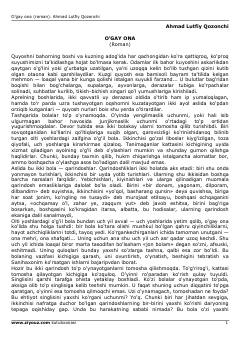

OOO'gay ona qo'lida qiyinchilik ko'rgan yetim bola Ismoilning taqdiri haqidagi ta'sirchan roman.
Ushbu roman yetim qolgan va o'gay ona qo'lida qiyinchiliklarga duch kelgan Ismoil исmli bolaning achchiq qismati haqida hikoya qiladi. Asarda insoniy mehr-oqibat, shafqat va rahmdillik mavzulari ta'sirchan tarzda yoritilgan.